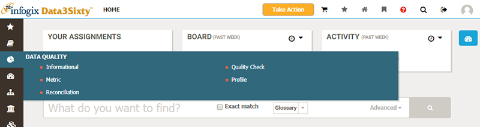
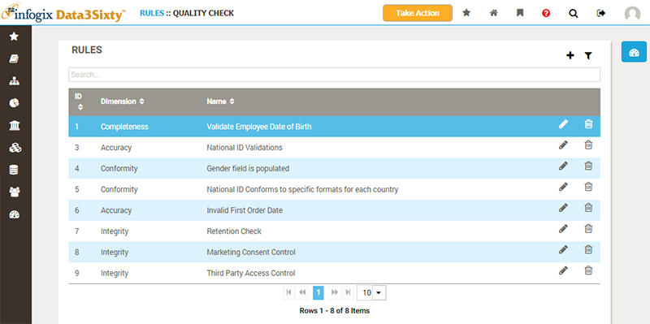
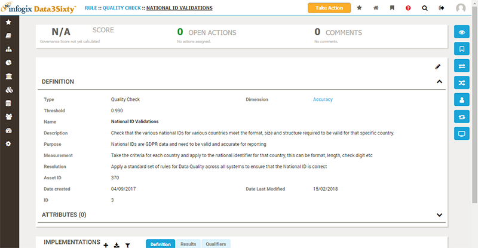
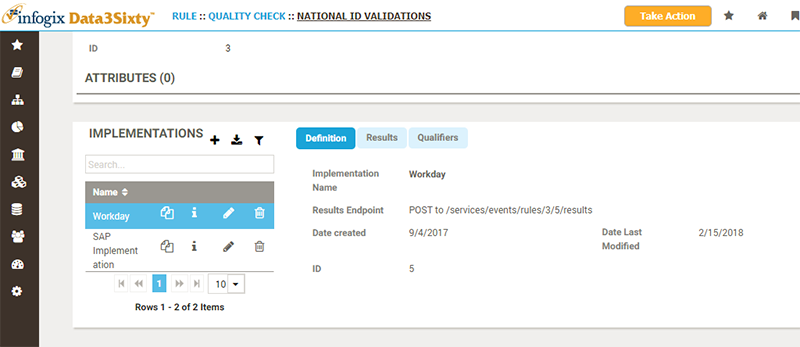
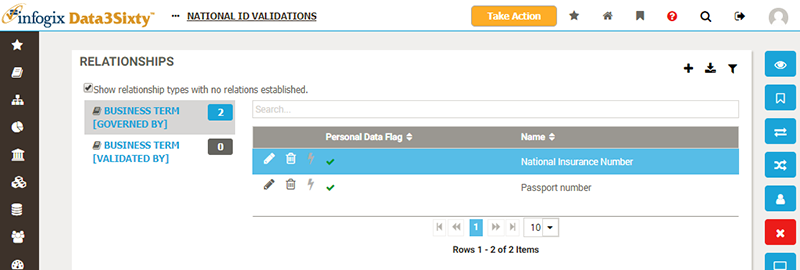

|
|
Browsing quality rules
Hover over the Data Quality button in the primary navigation to display a menu of the types of quality rule available to you:

The types of quality rule you can create will vary from company to company, so the pop-up menu you see will probably look a little different to the example shown above.
Clicking on a type from the Data Quality pop-up menu will list all of the quality rules of that type:

The name and associated dimension of each rule is displayed.
Please see the topic Filtering and exporting from tables for full details on how to work with these lists of assets.
Clicking on a quality rule will navigate to a screen showing full details for the item:

Please see the topic Inspecting assets for an explanation of the common sections of the asset page.
Implementations
The Implementations section lists all integrations to external systems, where quality data is ingested and used to determine quality metrics for any related artifacts:

Relations
The Relations view allows you to see which artifacts are related to the quality rule:

As you can see from the screen above, relationship types have been created which allow the user to govern and validate business term artifacts with quality check rules.
See the topic Relating quality rules to assets for more details.